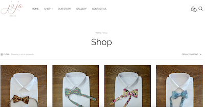
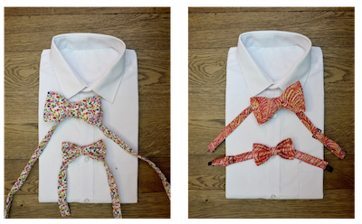
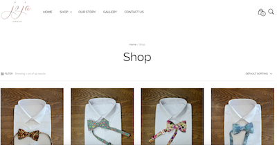
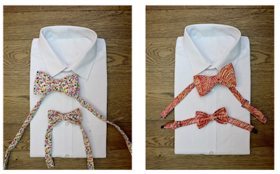

GEORGIA MILLS
Why did the developer quit his job?
Because he didn't get arrays!!
Hello, I am a full-stack junior developer with a passion
for user experience and design.
Being both creative and curious, I love working on every aspect of a project; from conceptualization, prototyping and design
right through to testing, development, and finally, the launch.
Since learning to code at Makers Academy, Europe's leading Web Developer bootcamp, I have been exploring the world of both front-end and back-end programming in a number of languages, descrovering its endless learning curves and unlimited potential.
XP values
Softwear craftmanship
Test driven development
Agile Methodologies
Ruby | Rails
Javascript | Node.js
Swift | Xcode
React | Redux
Rspec | Jasmine | Mocha
Photoshop | Illustrator | Sketch
GRACE PRINCE
INTERACTIVE
ROLE
Developer | UX- and UI-Design
TECHNOLOGIES
Ruby | Sinatra | GSAP
DESCRIPTION
Grace Prince, a talented furnature designer from London
came to me with a challenge. She wanted to create a
beautifully designed online portfolio, animated to show
off her playfull creative side, whilst highlighting
her pieces in a professional way.
We worked through various scenarios together to come up with the perfect user experience.
www.graceprince.comphotos of Grace website go here
FLARE
ROLE
Developer
TECHNOLOGIES
Swift | Xcode | Firebase
DESCRIPTION
Flare, the love child of Snapchat and Pokemon Go, is a social mobile app for sharing spontaneous moments based on where you are. Thought up one fatefull night at the pub, myself and a team of 4 other developers decided to turn it into a project, and spent the weeks proceeding learning swift/Xcode from scratch, creating our MVP following TDD and agile methologies
Download the beta version from the itunes store www.flare.earth
JOJA LONDON
ROLE
Co-founder | Designer
TECHNOLOGIES
Wordpress
DESCRIPTION
Joja London is a boutique bow-tie company that went from a small market stall I ran in my spare time, to a full blown company. We hand-make custom bow-ties and wedding accessories here in London, for customers all around the world. From creative director on photo-shoots and designer for special edditions, to accountant and sales rep, I have experienced many of the different roles required in a creative start-up.

 



BLOOM
aka. The Happiness Project
ROLE
Developer
TECHNOLOGIES
Javascript | Ruby on rails | Rspec
DESCRIPTION
Bloom is a skills tracking app for budding web developers built during a three day hackathon.
Users who sign up can rate their confidence levels in a number of skills
They'll then be able to visualize their progress through charts and tables and are emailed each day with helpful resources related to the skill they're least confident in.